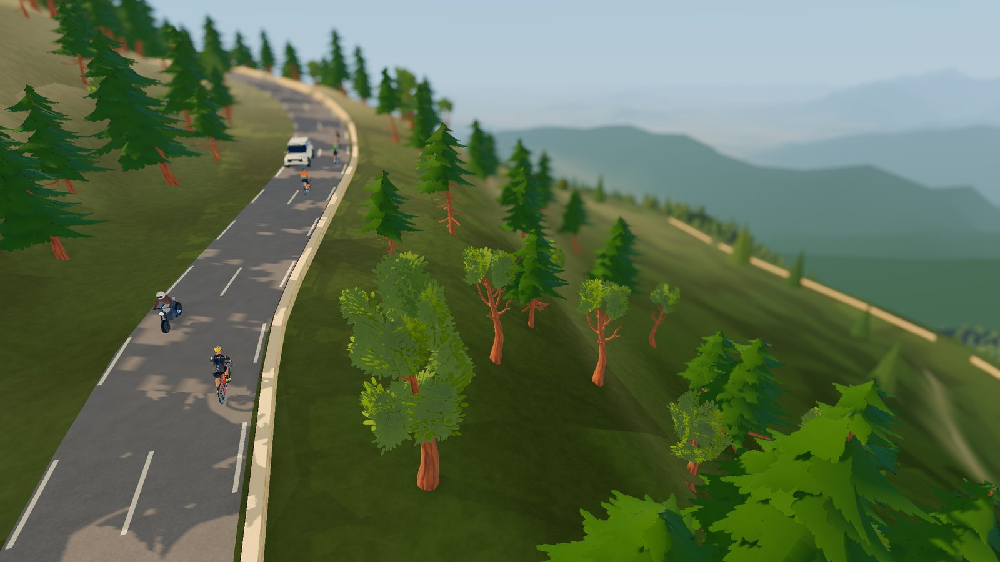

The gentlest, the longest, the most fragrant. From the lavender fields of the Albion plateau to the scree at a steady pace… before six last kilometres that show no mercy.
Each bar is one kilometre, coloured like the white and yellow roadside markers: green below 3%, yellow, orange, red, then dark red above 10%.

You leave the hilltop village on the Ventoux road, between lavender and spelt fields. After a short descent the climb starts at 4 to 5%, as steady as a metronome.

A long stretch through the pine forest, never above 6%: perfect for a threshold session or a training plan.

At Chalet Reynard the Sault road joins the Bédoin road. The scenery changes at once: not a single tree left, the white scree and the summit straight ahead.

Between 7 and 9% all the way, past the Tom Simpson memorial and the Col des Tempêtes, up to the observatory and its crowd.


The royal road. The Tour de France route, the relentless forest and the desert of white stones. 21 kilometres from the vineyards to 1,912 metres.

The north face. More irregular, wilder, with the steepest ramps of the Giant and the Mont Serein ski station halfway to the sky.
 Mont Ventoux Online
Mont Ventoux Online